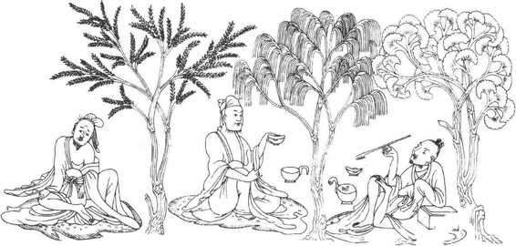

受到两汉统治者支持的今文经学由于大讲阴阳灾异、宣扬谶纬迷信，结果越来越烦琐和荒诞，致使儒学威信下降，对社会的影响减弱。自三国至两晋、南北朝的三百余年间，中国大部分时间处于分裂战乱局面之中。一般的知识分子、士大夫对儒家“治国平天下”的政治理想失去了信心，悲观厌世的情绪在文人中滋长，于是他们就到道家那里寻求精神寄托，希望逃避现实而独善其身。他们倾心钻研“三玄”（指《老子》、《庄子》、《周易》），追求“玄虚淡泊，与道逍遥”，以求明哲保身。这就使得道家越来越受到重视，道家宣扬的无名无形的“道”代替了有意志、有作为的“天”。尤其是这时期实行的九品中正制的选官制度，不看重才学道德，家世出身成为仕进的唯一依据，就更使得儒家学说对士人们的吸引力大为降低。与此同时，西晋统治者司马氏是通过政变取得政权的。这个政权代表了大地主、大官僚的利益，它进一步助长了土地的兼并，在生活上骄奢淫逸、纵情享乐。司马氏在意识形态上支持崇尚自然的道家思想，作为他们篡权和享乐的理论借口。由于这些条件，这时期道家学说的地位上升，产生了玄学。所谓玄学，就是用道家崇尚自然的思想来解释儒家的名教（即儒家提倡的伦理道德和礼仪制度）。消极悲观的思想情绪使许多名士或以出身门第、容貌仪止相标榜，或以虚无玄远的“清谈”而得意，他们并不完全否定儒家，而是把老庄的思想与儒家的名教结合在一起，但是以道家为主导。他们宣扬儒家名教的本源是出于自然的道。玄学的发展大体可以分为如下三个阶段：名教本于自然、越名教而任自然和名教即自然。
曹魏正始年间（240—248），何晏作《道德论》、注《论语》，王弼注《老子》、《易经》等，他们借以宣扬“无”（即道）是万物的本源，同样也是儒家的伦理道德的本源和指南。他们认为，对于儒家的名教，如果不是人为地造作提倡，而是顺其自然地实行，如君主推行无为统治、臣民恪守无为、不作反抗，社会就会安定平和。王弼在注解《老子》中指出，仁义礼乐并非破坏了自然，而是古代圣贤为了引导人们清除杂念、回归自然而遵循的准则，因此儒家的名教也是合乎自然的。王弼的论证尽量把道家和儒家思想糅合在一起，由于强调了道家的主导作用，使得儒家礼教对人们的束缚也相对松弛了。
西晋时期，以阮籍、嵇康为代表的一些名士对于司马氏的统治极为不满，他们看穿了统治者表面上标榜仁义道德，实际上政治腐败、纵情声色，司马氏的政变篡权更是践踏了儒家的纲常。可是这些名士们又不敢直接对抗当权的统治者，于是就以一种玩世不恭的态度来否定儒学，批判现实政治。司马昭为儿子向阮籍求婚，阮籍不敢拒绝，便日日酒醉，令司马昭派来的人没有开口提婚的机会。阮籍的母亲去世，很多亲朋前来吊唁，而阮籍却翻着白眼相迎。依儒家的礼教，这是大不孝的，阮籍正以此表示对儒家礼教的蔑视。他在《大人先生传》中讽刺那些所谓儒学之士不过是钻进裤裆里“饥则啮人”的虱子，“行不敢离缝际，动不敢出裤裆，自以为得绳墨也”。阮籍把儒家礼教、封建帝王蔑视到了极点。
嵇康也对司马氏政权的虚伪给予揭露。他“非汤武而薄周孔”，“以六经为芜秽，以仁义为臭腐”，［17］希望“越名教而任自然！”［18］就是要超越（即抛弃）儒家的名教而任从自然。他们如此菲薄儒家名教，并非出于真心反对儒学，而是面对凶残的统治者，只好以蔑视儒家来揭穿其虚伪和抒发胸中的压抑与不平的情绪。（图9—16）

图9-16 南京西善桥南朝墓出土拼镶砖画《竹林七贤图》中的部分人物
以后向秀、郭象等人又以“名教即自然”的口号宣扬伦理纲常即是自然，认为封建秩序是天理的自然。郭象并不认为天地万物皆以无为本，他说，万物是“块然而自生耳”［19］，万物皆独立存在于客观世界之中，儒家的伦理纲常也不是人为的，都是自然地存在：“君臣上下，手足内外，乃天理自然。”［20］只要顺其自然存在，便是无为了。
玄学的发展使得道家思想影响深入，引导人们注重探索事物的内在精神。在玄学的指导下，众多的文学艺术作品越来越强调表现人的内心世界和事物的内在本质。所以顾恺之对于绘画人物，强调其“传神写照，正在阿堵之中”［21］。陶渊明在他的《归去来辞》中说：“此中有真意，欲辩已忘言。”人们对待文学艺术作品时，也是“不以目遇，而以神交”，即对于那些作品的欣赏不是通过眼睛直接看到，而是通过精神的交流有所体悟。像《文心雕龙》、《诗品》等文学批评专著更喜欢用“风骨”、“神韵”等概念来评价作品的精神。这些都是在玄学盛行的背景下出现的。
印度佛教自从两汉之际传入中国以后，佛家学说与中国传统文化发生碰撞，它们既有冲突、排斥的一面，也有相互学习、渗透的一面，但总体上是以融合为主。经过一段时期的磨合，终于融汇成一个整体，就是所谓的儒、释、道三家合流。所以能形成这样的结果，原因是多方面的。一来是中国文化需要补充其不足，二来是佛学能满足中国文化的需要，三是外来的佛学进入中国这样一个有着深厚文化传统的环境后，也主动进行了自我调整以适应新的文化环境。还有一个更根本的原因是，佛教的进入顺应并有助于中国封建社会继续向前发展，对中国的社会发展能起到积极作用。
佛教传入以前，以先秦诸子为代表的中国文化思想中比较发达的是经验论，即面对社会现实问题提出各自解决的渠道和办法，例如儒家主张通过教育提高道德，便可以实现治国平天下的理想社会；法家宣扬以法治国便能达到社会稳定、富国强兵的目的；墨家则强调“兼爱”、“非攻”以实现公正、和平的社会等等。有关宇宙万物的产生、人与宇宙的关系等哲学本体论方面的问题则未有触及，只有道家论述了这方面的问题，但未能充分展开，老子的《道德经》也才只有五千言。因此，中国先秦文化中涉及哲学深层的思考是比较薄弱的，而佛教的“缘起说”等则是一套比较成熟的本体论思想。尽管佛学属于唯心主义哲学体系，但它却有助于弥补中国文化的不足。佛教与中国传统文化的接触、磨合，到了两晋时期，越来越受到玄学家们的重视，他们从印度大乘佛教的“一切皆空”、“万法唯识”等思想中汲取营养来阐述玄学。虽然道家的“无”与佛家的“空”并不相同，但双方都愿意借此靠拢。为了适应中国人的文化需求，佛教也主动淡化那些中国人难以接受的说教，而强调双方共同或相通之处，例如佛教就把儒家提倡的仁、义、礼、智、信等“五常”说成是佛教宣扬的“菩萨行”。
在中国，任何宗教都是封建统治者的统治工具，佛教也是一样。佛教融入中国传统文化以后，有助于封建统治者加强其思想专制、削弱人民的反抗意志，同时人民在反抗封建统治的斗争中，有时也会利用佛教等宗教作为舆论宣传和组织手段。宋代兴起的理学，实际上是儒、释、道三家合流在更高层次的发展，它以儒家礼教的形式出现，对人们的思想和行为实行了更加严厉的束缚和钳制。佛教融入中华文化之中并不表现在中国人都热衷于出家为僧。佛教以其学说影响中华文化主要在哲学、文学、艺术、建筑、语言乃至民俗等等方面。这里就不一一细说了。